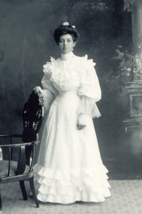

Mina Amundson
1891 - 1934

Mina at the time of her comfirmation
Mina Amundson was born in 1891 to Amund and Helene Simonson. She never married. Mina died in 1934.
Parents:
Amund Simonson
1852 - 1929
Helene (Hanson?, Budsberg?) 1855 - 1929
Offspring:
NONE
References:
1. Neal Wogsland
2. Barb Wogsland
Last Modified: 2 August 2004 by
Bradley James Wogsland
.